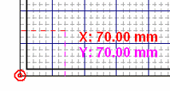
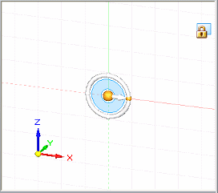

Zero Origin command
The Zero Origin command  automatically resets the origin as follows:
automatically resets the origin as follows:
-
In Draft, the drawing grid origin is reset to the drawing sheet (0,0) coordinate.

-
In profile and sketch, the drawing grid origin is reset to the (0,0) coordinate at the center of the current reference plane.

-
In synchronous modeling, both the drawing grid and the sketch plane origin are reset to the (0,0,0) coordinate and orientation at the center of the currently locked sketch plane.

Note:
This command is available only when you have locked a sketch plane.